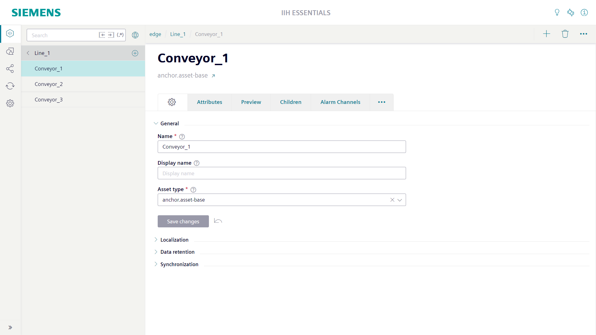
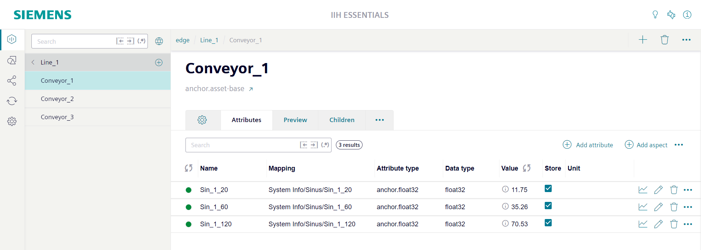
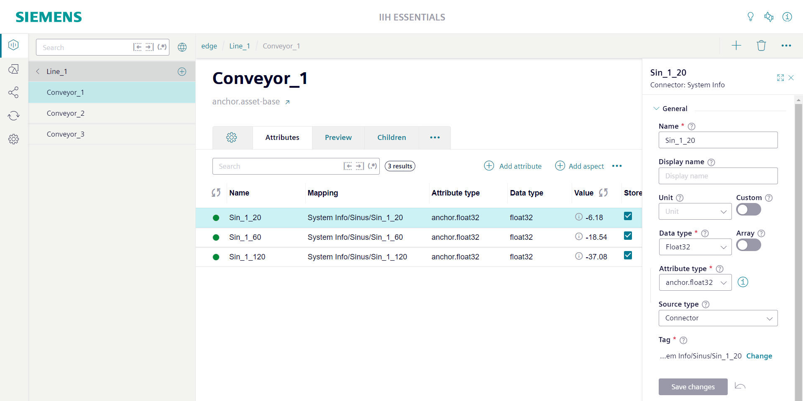
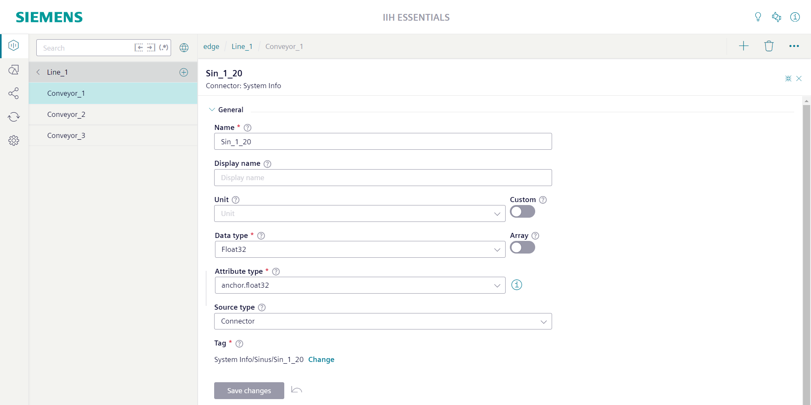
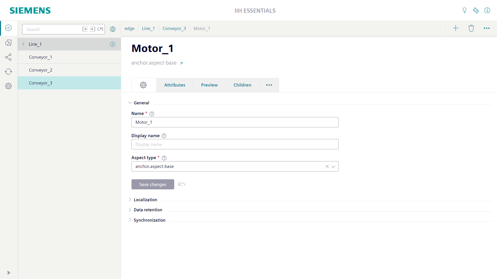
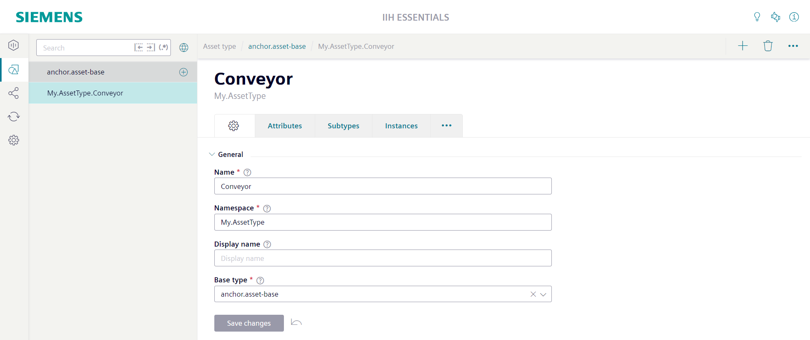
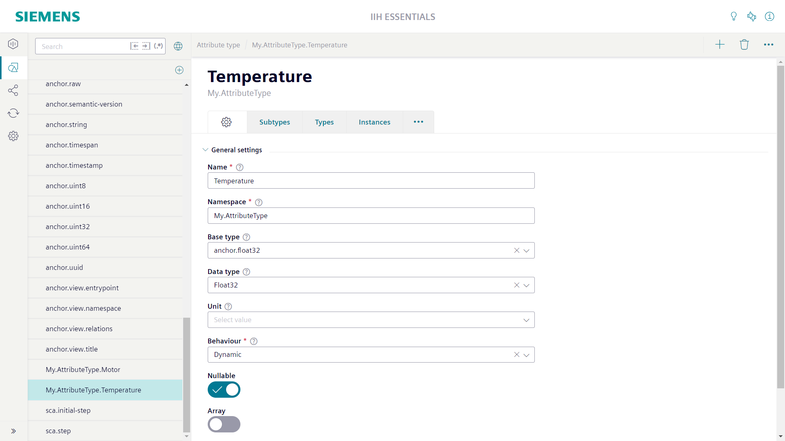

Model overview
Assets
Assets are the main modeling objects to recreate your system structure and to add the corresponding attributes. It can be some base class (e.g. Device, MotionDevice, Robot) or a very specific asset type for a product line or product model (e.g. Simatic1500SeriesController). It describes an asset independent of the use case.
The main title of the asset screen shows the name of the asset. Below the name the asset type of the asset is shown. With the link button right of the asset type name you can directly jump to the asset type.
Above the main title of the asset screen the location of the asset in the hierarchy is shown as a path. Each element of the path is clickable and allows to jump to the individual asset.
The settings tab of the asset screen is used to configure the properties of the asset.
The General section contains the mandatory Name field. For the name only the lowercase letters a-z, the uppercase letters A-Z, the numbers 0-9 and the special characters '-' and '_' are allowed. The name cannot be empty or start with a number. To overcome the strict naming rules you can configure the optional Display name field. If a display name is configured it will be used through the whole system instead of the name.
The General section contains also the mandatory Asset type field. Here at least the root asset type anchor.asset-base must be selected. The asset type can define attributes which all instances of the asset type automatically get added by the system. Changes at the asset type are automatically applied to the instances.

Attributes
Attributes are the data members of assets and aspects. The attributes of an asset or aspect are shown in its Attributes tab. Attributes can be created specific for an instance or can be inherited from the asset type or aspect type.
The first column of the attribute table shows the state of the attribute. It is only relevant for attributes which are connected to the tag of a connector. Green indicates that the connection is established successfully. Yellow and red indicates that there is a problem with the connection. With a click at the colored circle you get more details about the problem. Static attributes does not show a state indicator at all.
The Value column shows the most recent value of the attribute. It will be updated each second. The value update can be stopped via the refresh symbol right of the column title. The checkbox in the Store column can be used to switch on/off the collection of time series values. When the checkbox is switched off the state indicator turns into grey.

By clicking the edit icon in the attribute row the attribute sidebar can be opened. In the attribute sidebar all details of the attribute are shown.

By clicking the expand icon in the top right corner of the attribute sidebar the attribute sidebar can be switched in full screen mode.
The General section contains the mandatory Name field. For the name only the lowercase letters a-z, the uppercase letters A-Z, the numbers 0-9 and the special characters '-' and '_' are allowed. The name cannot be empty or start with a number. To overcome the strict naming rules you can configure the optional Display name field. If a display name is configured it will be used through the whole system instead of the name.
The General section contains also the optional Unit field. Here it is possible to select a unit from a predefined list of available units. If you enable the option Custom right of the Unit field you are able to enter a custom unit string of you choice.
The General section contains also the mandatory Data type field. You can choose from the predefined list of available data types. If you choose a data type a matching default attribute type will automatically be selected. If you enable the option Array right of the Data type field the attribute becomes an array. Also in this case a matching default array attribute type will be automatically selected. In most cases the default attribute type will full fill your needs. If not you can use the Attribute type field to directly choose another attribute type. Selecting another attribute type will automatically update the Data type field and the Array option depending on the configuration of the attribute type. With the info button right of the Attribute type field you can get some details about the selected attribute type.
The General section contains also the Source type field. With the source type you specify where the values of the attribute are coming from. The options No source, Static, Connector and Transformation are available. When the option Static is chosen the Value field can be used to directly configure the attributes value. In this case no time series values are available for the attribute. For all other source types time series values are available. When the option Connector is chosen the button Change can be used to open the Select tag for the attribute window. Here a tag can be selected which the system uses to collect time series values. When the option Transformation is chosen the Transformation field can be used to define a formula which the system uses to calculate time series values. The option No source means that the system does not actively collect time series values. The attribute can get time series values via the REST API or via the import functionality.
The data types Composition and Aggregation are used to structure assets. These data types do not support time series values. Also the data types Localizedstring and Uuid do not support time series values. In general also all array data types do not support time series values.

Aspects
Aspects are mainly used to define the substructure of assets and to group attributes. An aspect is an integral part of an asset. If an asset is deleted also its aspects will be deleted. An aspect usually represents model information that is either use case specific (e.g. an aspect for energy management, which can be attached to various different assets dealing with an energy consumption) or a cross-cutting concern (e.g. nameplate and location, which are not specific to certain asset types).
Special attributes of type Composition are used to link the aspect to its owning asset. Like all other attributes also these composition attributes are shown in the Attributes tab of the asset. For composition attributes the Value column shows the name of the aspect. The attribute row contains a link button to open the aspect.

The main title of the aspect screen shows the name of the aspect. Below the name the aspect type of the aspect is shown. With the link button right of the aspect type name you can directly jump to the aspect type.
Above the main title of the aspect screen the location of the aspect in the hierarchy is shown as a path. Each element of the path is clickable and allows to jump to the individual asset.
The settings tab of the aspect screen is used to configure the properties of the aspect.
The General section contains the mandatory Name field. For the name only the lowercase letters a-z, the uppercase letters A-Z, the numbers 0-9 and the special characters '-' and '_' are allowed. The name may not start with a number. The name may not be empty. To overcome the strict naming rules you can configure the optional Display name field. If a display name is configured it will be used through the whole system instead of the name.
The General section contains also the mandatory Aspect type field. Here at least the root aspect type anchor.aspect-base must be selected. The aspect type can define attributes which all instances of the aspect type automatically get added by the system. Changes at the aspect type are automatically applied to the instances.

AssetTypes
Asset types can be used to centrally define the structure of assets. If an asset is created based on a specific asset type the system automatically creates all attributes defined at the asset type for the asset as well.
The main title of the asset type screen shows the name of the asset type. Below the name the base type of the asset type is shown. With the link button right of the base type name you can directly jump to the base type.
Above the main title of the asset type screen the location of the asset type in the inheritance chain is shown as a path. Each element of the path is clickable and allows to jump to the individual asset type.
The settings tab of the asset type screen is used to configure the properties of the asset type.
The General section contains the mandatory Name field. For the name only the lowercase letters a-z, the uppercase letters A-Z, the numbers 0-9 and the special characters '-' and '_' are allowed. The name may not start with a number. The name may not be empty. Additionally to the name also a Namespace must be configured. For the namespace the same restrictions are valid like for the name, except that individual namespace parts may be separated by dots.
The General section contains also the mandatory Base type field. Here at least the root asset type anchor.asset-base must be selected. The base type can define attributes which all derived types inherit.

The Attributes tab of the asset type is used to list and configure the attributes of the asset type. By clicking the edit icon in the attribute row the attribute sidebar can be opened. In the attribute sidebar all details of the attribute are shown.
There is the mandatory Attribute name field. For the name only the lowercase letters a-z, the uppercase letters A-Z, the numbers 0-9 and the special characters '-' and '_' are allowed. The name may not start with a number. The name may not be empty. The name must be unique inside the type. Additionally the name may not be used already in any base type and may also not be used already in any derived type.
Additionally the attribute needs a Data type. You can choose from the predefined list of available data types. If you choose a datatype a matching default attribute type will automatically be selected. If you enable the option Array right of the Data type field the attribute becomes an array. Also in this case a matching default array attribute type will be automatically selected. In most cases the default attribute type will full fill your needs. If not you can use the Attribute type field to directly choose another attribute type. Selecting another attribute type will automatically update the Data type field and the Array option depending on the configuration of the attribute type.

AspectTypes
Aspect types can be used to centrally define the structure of aspects. If an aspect is created based on a specific aspect type the system automatically creates all attributes defined at the aspect type for the aspect as well.
Aspect types can also be used as part of asset types. For this also an attribute type must be defined which references to the aspect type. The attribute type can be put into the attribute list of the asset type.
The main title of the aspect type screen shows the name of the aspect type. Below the name the base type of the aspect type is shown. With the link button right of the base type name you can directly jump to the base type.
Above the main title of the aspect type screen the location of the aspect type in the inheritance chain is shown as a path. Each element of the path is clickable and allows to jump to the individual aspect type.
The settings tab of the aspect type screen is used to configure the properties of the aspect type.
The General section contains the mandatory Name field. For the name only the lowercase letters a-z, the uppercase letters A-Z, the numbers 0-9 and the special characters '-' and '_' are allowed. The name may not start with a number. The name may not be empty. Additionally to the name also a Namespace must be configured. For the namespace the same restrictions are valid like for the name, except that individual namespace parts may be separated by dots.
The General section contains also the mandatory Base type field. Here at least the root aspect type anchor.aspect-base must be selected. The base type can define attributes which all derived types inherit.

AttributeTypes
Attribute types can be used to centrally define the settings of attributes. For each datatype there is already a default attribute type available. For example for the datatype Bool there is the default attribute type anchor.bool. Its only necessary to define custom attribute types if the default attribute types does not fit to you needs.
The main title of the attribute type screen shows the name of the attribute type. Below the name its namespace is shown.
The settings tab of the attribute type screen is used to configure the properties of the attribute type.
The General section contains the mandatory Name field. For the name only the lowercase letters a-z, the uppercase letters A-Z, the numbers 0-9 and the special characters '-' and '_' are allowed. The name may not start with a number. The name may not be empty. Additionally to the name also a Namespace must be configured. For the namespace the same restrictions are valid like for the name, except that individual namespace parts may be separated by dots.
The General section contains also the optional Base type field. It is possible to derive an attribute type from a base type. The derived attribute type inherits the settings from the base type.
The General section contains also the optional Data type field. You can choose from the predefined list of available data types. For all instances (attributes) of the attribute type the configured datatype is automatically used. It can not be changed at the attribute.
The General section contains also the optional Unit field. Here it is possible to select a unit from a predefined list of available units. If you enable the option Custom right of the Unit field you are able to enter a custom unit string of you choice. For all instances (attributes) of the attribute type the configured unit is automatically used. It can not be changed at the attribute.
The General section contains also the optional Behaviour field. Here you an choose from the options Dynamic, Readonly and Constant. If the instances (attributes) should store time series values Dynamic is the correct choice. If Readonly is selected the instances (attributes) can only store static values. All default attribute types are Dynamic.
The General section contains also the Nullable switch. A not Nullable attribute type used in an asset or aspect type defines a mandatory attribute. It can not be deleted from instances (assets or aspects). Nullable attribute types defines optional attributes. They can be deleted from instances. All default attribute types are Nullable.
The General section contains also the Array switch. The maximum size of an array can be 4096. With the optional Minimum items and Maximum items fields it is possible to further restrict the size of the array. Minimum items defines the minimal number of elements that an array must have. Maximum items defines the maximal number of elements that an array can have. Setting both fields to the same value defines a fixed size array.

Except where otherwise noted, content on this site is licensed under the Siemens Inner Source License .